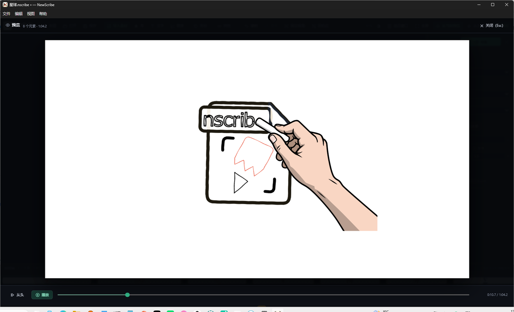
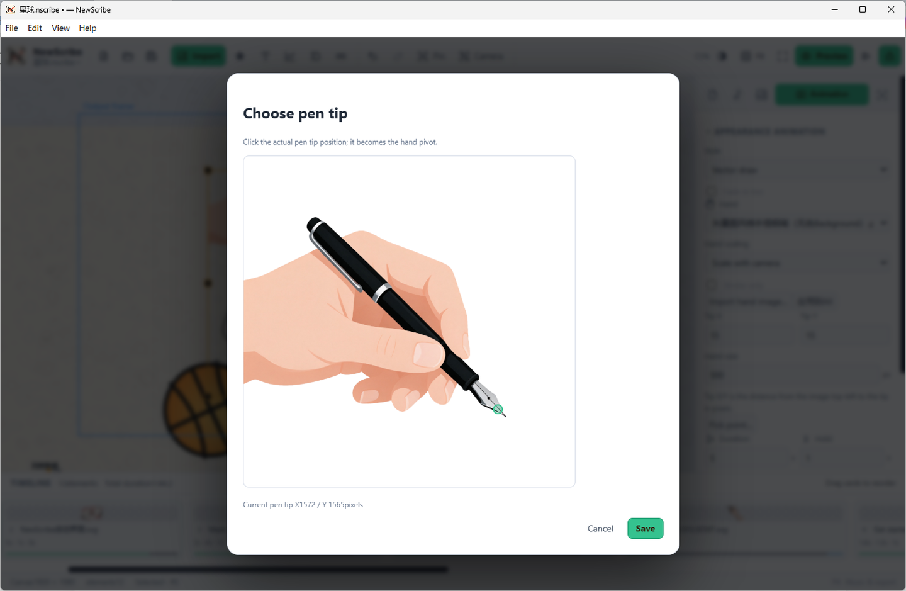
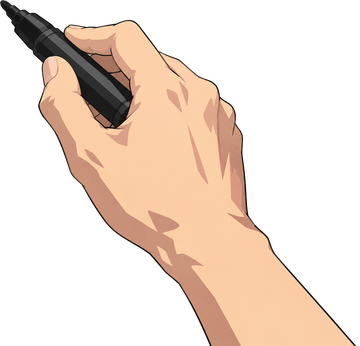
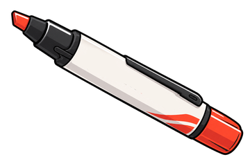
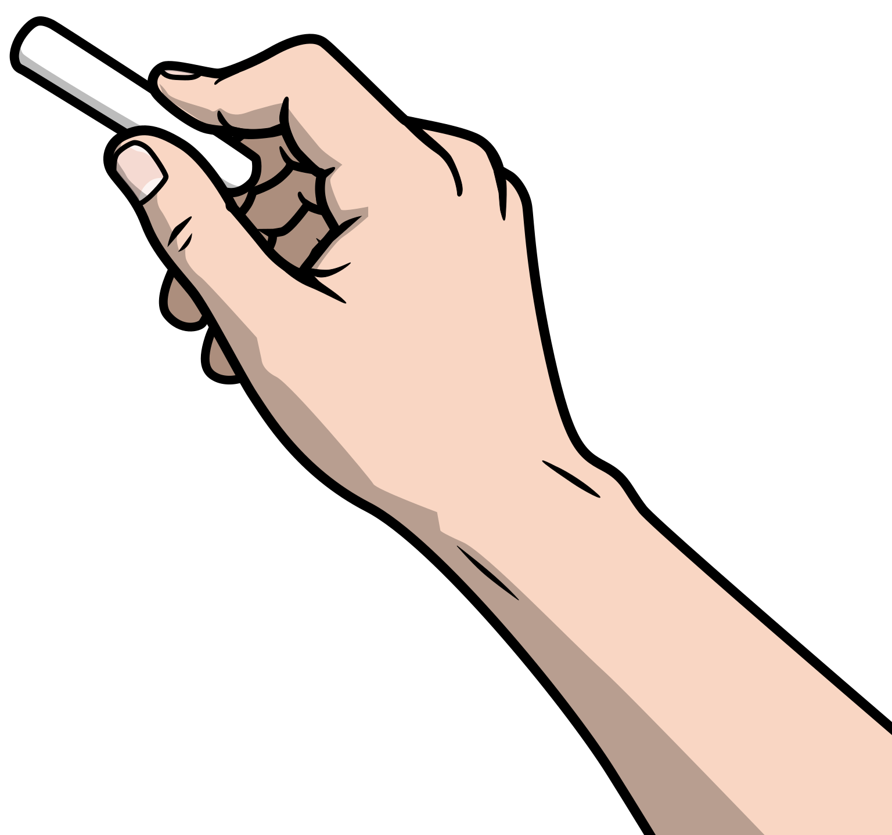
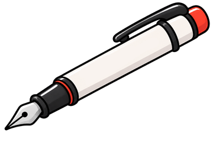

NewScribe user help
Hands and masks
Built-in and custom hands, visual pen-tip picking, and the three mask modes.




Right handDefault hand
MarkerPlain / with logo
ChalkFor a board texture
PenPlain / with logo BrushPlain / with logo
BrushPlain / with logo10. Hands#
The  hand makes a drawing feel as if a person is creating it. Vector draw and bitmap draw both support hands.
hand makes a drawing feel as if a person is creating it. Vector draw and bitmap draw both support hands.
NewScribe includes several hand styles, such as a right hand, marker, chalk, pen and brush.
The gallery below previews the default hands. The marker, pen and brush also have versions with and without a logo.
Choose a blank hand to hide the hand entirely.
Hand size#
There are two size modes:
- Scale with
 camera
camera - Fixed screen size
“Scale with camera” makes the hand grow and shrink with the shot, like a real camera filming a  table. “Fixed screen size” keeps the hand at a consistent visual size even when the camera zooms.
table. “Fixed screen size” keeps the hand at a consistent visual size even when the camera zooms.
You can also set a separate hand height.
Custom hands#
You can import a PNG, JPG or WebP as a custom hand. After importing, choose the pen tip, use visual pick, adjust X/Y, set the height, and optionally apply the hand to all drawing elements.
Visual pick opens the hand  image; click the actual point where the pen touches the board. NewScribe converts that point into pen-tip coordinates.
image; click the actual point where the pen touches the board. NewScribe converts that point into pen-tip coordinates.
Custom hands are saved in the local hand  library. When you
library. When you  save a
save a .nspkg, the custom hands used by the project are included in the package.
11. Masks#
A  mask covers or reveals a region. Masks can be rectangles or ellipses.
mask covers or reveals a region. Masks can be rectangles or ellipses.
All elements#
The mask covers everything, including elements before and after it. Only the background remains inside the mask.
Use it for a fixed cut-out or to hide an entire region.
Previous elements only#
The mask covers only elements that existed before the mask. New elements after the mask can be drawn on top.
Use it to erase old content while keeping later content visible.
Specific element#
Only the chosen target is affected. Other elements are untouched.
Use it to hide one image or one  text element without affecting the surrounding scene.
text element without affecting the surrounding scene.
Mask animation#
A mask can have its own appearance, hold, disappearance and switch. The editor shows the static mask region; the preview and export show the animation.
If a mask is meant to erase something after a long hold, choose the mask mode carefully. “All elements” is not the same as “previous elements only”, and “specific element” is the narrowest option.